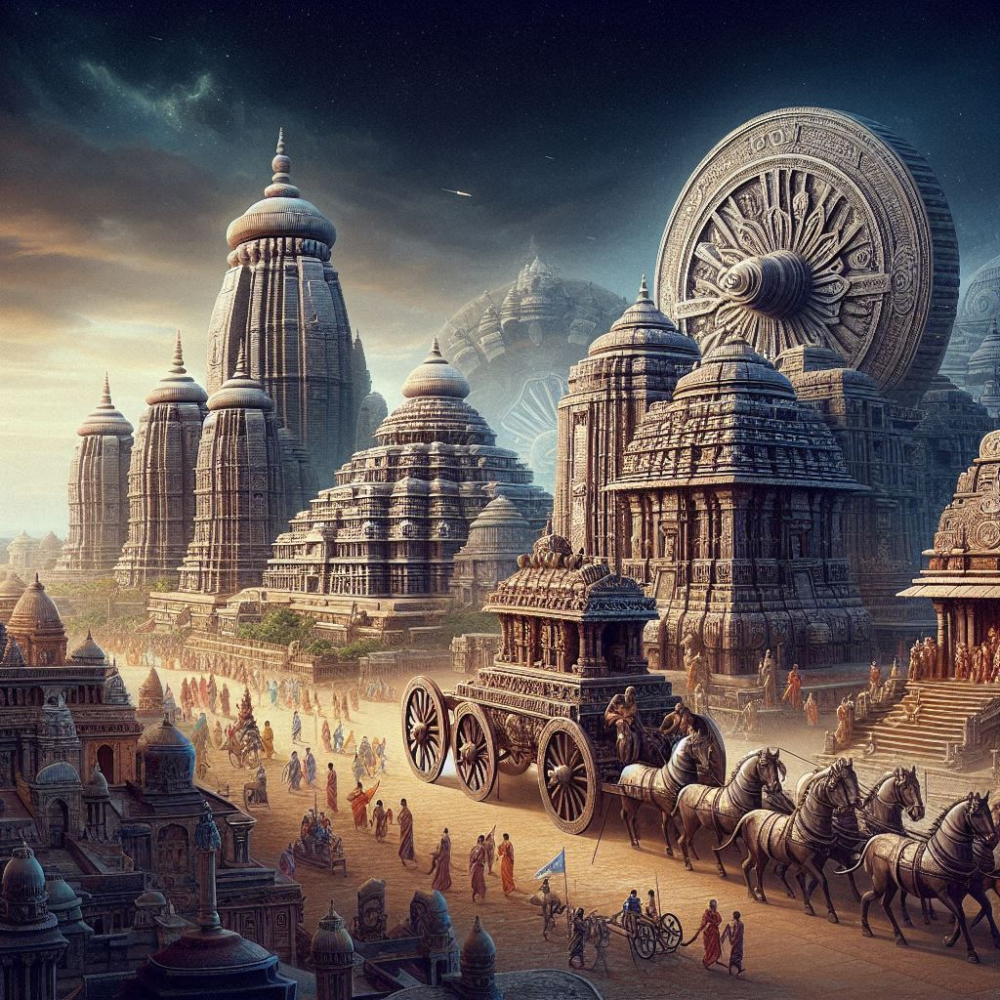
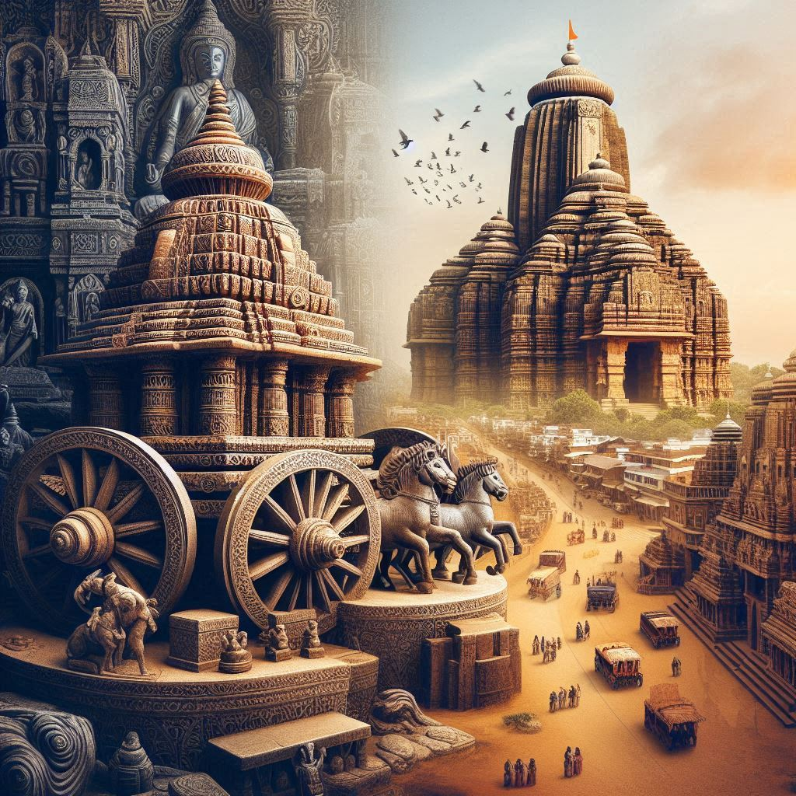

History of Odisha
The history of Odisha is rich and varied, stretching from ancient times to the modern era. Known for its distinctive culture, art, and architecture, Odisha has played a significant role in the history of India. Here’s an overview of Odisha's historical journey:
Ancient History
1. Early References and Ancient Kingdoms (Pre-2nd Century BCE)
- Odisha, known in ancient times as Kalinga, has references in various early historical texts, including the Mahabharata and the Ramayana.
- The Maurya Empire under Emperor Ashoka (3rd century BCE) is significant in Odisha's history. In 261 BCE, Ashoka’s famous Kalinga War was fought in Odisha. The war, which resulted in a devastating loss of life, led to Ashoka’s conversion to Buddhism. He subsequently embraced non-violence and inscribed the Kalinga Edicts on rock pillars throughout the region.
2. The Kalinga Kingdom (Up to 3rd Century CE)
- Kalinga was an important region in early Indian history, known for its marine trade, culture, and agriculture. The Kalinga Kingdom was later replaced by several smaller kingdoms and dynasties.
- The Kalinga War marked the end of Kalinga's military power but led to a significant cultural and religious transformation in the region.
3. The Shunga, Satavahana, and Gupta Dynasties (2nd Century BCE - 6th Century CE)
- After the decline of the Mauryas, Odisha was ruled by various regional powers, including the Shunga Dynasty and the Satavahanas.
- The Gupta Empire (4th to 6th century CE) saw a period of peace and prosperity in Odisha. The region contributed significantly to the growth of Hinduism, Buddhism, and art during this time.
Medieval Period
1. The Eastern Ganga Dynasty (12th-15th Century)
- The Eastern Ganga Dynasty ruled Odisha from the 12th to the 15th centuries, with its capital at Kalinganagara (near present-day Cuttack).
- Under the Eastern Gangas, the Konark Sun Temple was built (early 13th century) by King Narasimhadeva I, a marvel of architecture and sculpture, dedicated to the Sun God.
- The dynasty also saw the expansion of Jagannath worship in Puri, where the Jagannath Temple became an important pilgrimage site.
2. The Gajapati Dynasty (15th-16th Century)
- In the 15th century, the Gajapati dynasty emerged as the powerful rulers of Odisha. King Kapilendra Deva established a strong regional empire.
- During the reign of the Gajapatis, Odisha witnessed cultural and economic growth. The Rath Yatra (Chariot Festival) became a central event in Puri, drawing pilgrims from across India.
- Vijayanagara influence: Odisha had political and cultural interactions with the Vijayanagara Empire to the south during this period.


Modern History
1. Mughal and Maratha Influence (16th-18th Century)
- From the 16th century, Odisha became embroiled in conflicts with the Mughals and later the Marathas.
- In 1592, Mughal Emperor Akbar invaded Kalinga (Odisha), and by the 17th century, parts of Odisha came under Mughal rule. However, they had limited control over the coastal region, as local rulers continued to exert influence.
- In the 18th century, the Marathas expanded their control over Odisha, especially the northern regions, until British colonial control emerged.
2. British Colonial Rule (19th-20th Century)
- Odisha was annexed by the British East India Company in the early 19th century. During British rule, Odisha was part of the Bengal Presidency and later became a separate province.
- The Great Famine of 1866 had a devastating impact on Odisha’s population, causing significant loss of life and economic hardship. The British response to the famine and the subsequent relief efforts are still a matter of historical controversy.
- The colonial period saw significant economic changes, the construction of roads and railways, and the establishment of administrative centers like Cuttack and Bhubaneswar.
3. Odisha’s Fight for Independence
- Odisha played an active role in the Indian independence movement. Leaders like Utkalmani Gopabandhu Das and Laxmi Bai of Jhansi became symbols of resistance against British rule.
- The region saw significant protests, and the state's Freedom Movement was closely linked with movements in Bengal and other parts of eastern India.
- The Indian National Congress gained strong influence in the region, and figures like Biswanath Das became key political leaders in the pre-independence era.
Post-Independence Period
1. Formation of the State of Odisha (1947-1950s)
- After India's independence in 1947, the state of Odisha was formed by the integration of various princely states, such as Bolangir, Bhubaneswar, and Cuttack, into one state.
- Odisha’s language, Odia, was recognized as the official language of the state in 1950.
- The city of Bhubaneswar was established as the capital of Odisha in 1948, designed by architect Pierre Jeanneret, under the guidance of Le Corbusier. The city quickly grew into a hub of education, culture, and administration.
2. Modern Challenges and Development (1960s-2020s)
- In the post-independence period, Odisha has faced several challenges, including poverty, natural disasters, and economic inequalities. However, it has also made strides in education, infrastructure, and industrial growth.
- Odisha has become a significant center for industries such as mining, steel, and aluminum production, and it has seen growth in the tourism sector due to its rich cultural heritage and natural beauty.
3. Cultural and Religious Significance
- Odisha remains one of the leading states in India for preserving ancient temples, classical dance forms (such as Odissi), and its distinctive art and craft traditions. The Jagannath Temple in Puri continues to be a central religious site, attracting millions of pilgrims every year.
Conclusion
The history of Odisha is a story of ancient kingdoms, cultural riches, colonial struggles, and post-independence transformation. From the Kalinga Kingdom and the Mauryan Empire to its role in the Indian independence movement, Odisha has always been a significant player in Indian history. The state's rich cultural traditions, historic sites, and strong religious roots continue to shape its identity today, making Odisha a unique and important part of India's heritage.